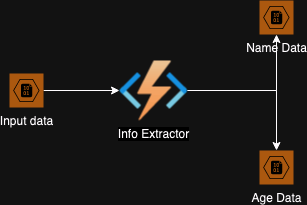
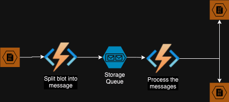
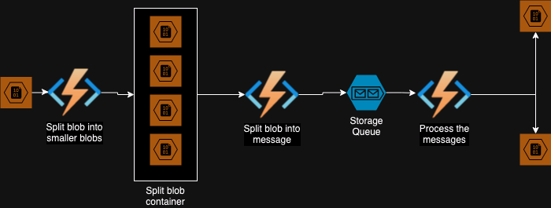

Problem Statement: Extract information from a JSON file containg an array of objects. For this article, each object in the file is as follows:
{
"id": 1,
"name": "Bilbo",
"age": 111
}
and we want to extract the name and age information. We will also assume that each extraction take about 1s to perform. This is to keep the problem simple and still discuss the complexities associated with long running funcitons.
{
"id": 1,
"name": "Bilbo",
}
{
"id": 1,
"age": 111
}
Contstraints
- The input file is a blob on azure cloud.
- A file can be added anytime during the day.
- Each file can have hundreds of thousands of objects.
- The output objects should be saved in two different blobs.
Stage 1
The easiest thing to do is to write one function that uses an input blob trigger, and two output blob bindings. The architecture at this point will look something like:

Constraints
- Based on our assumption, the program spends about 2s on each object and hence to run a file containting only 1000 objects would take 2000 seconds, that is more than 30 mins.
- Consumption plan azure function only gaurantees execution time less than 10 mins.
Stage 2
To reduce the execution time per function we will use two functions, one will read the blob and send messages to a queue and the other will read these messages and process them.

This architecture has the following benefits:
- Each function processing the message runs only about 2s.
- The application auto scales horizontally based on the number of message in the queue.
- If for some reason processing of one of messages fails, it will be retried a few times based on the settings.
- The pipeline continues to work even when there are failures processing some messages.
- The poison queues will have all messages that failed to be processed.
When we deployed this function we ran into the following issue:
- Splitting a large blob into messages would take a lot of time. To overcome this problem we add another function to split the big input blob to smaller blobs, this produces the third architecture.
Stage 3

Go Top
comments powered by Disqus